¿QUE ES EL COMITÉ DE CONVIVENCIA LABORAL?

Es un organismo asesor conformado por un numero igual de representantes del empleador y de los trabajadores con sus respectivos suplentes, cuya principal función es la de establecer estrategias de conciliación entre las partes cuando exista una queja de acoso laboral; de igual forma el promover actividades preventivas de acoso laboral para proteger a los trabajadores contra los riesgos psicosociales que afecten su salud en los lugares de trabajo